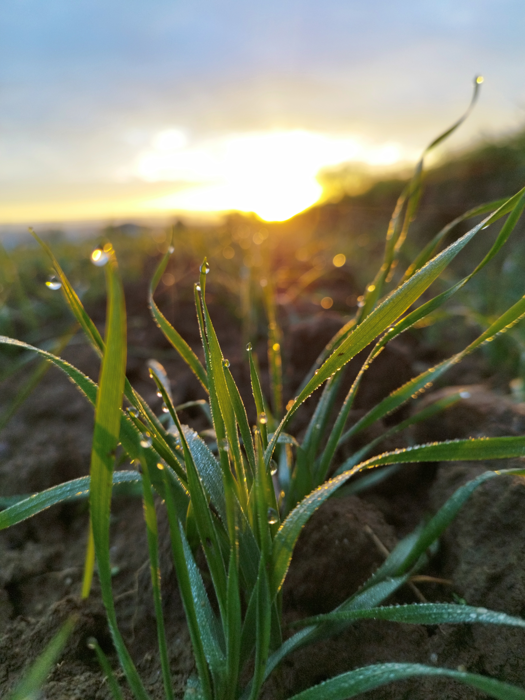

Du grain au pain 🌾
Bienvenue dans notre boulangerie paysanne ! Ici, nous transformons les céréales cultivées sur nos propres terres en un pain savoureux, digeste et nourrissant.
Notre méthode de travail respecte la tradition :
- Farine fraîche : moulue sur notre propre meule de pierre.
- Fermentation lente : au levain naturel pour plus de goût.
- Cuisson : réalisée au feu de bois pour une croûte parfaite.